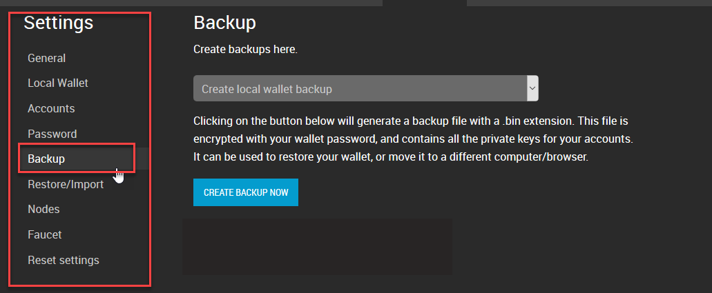
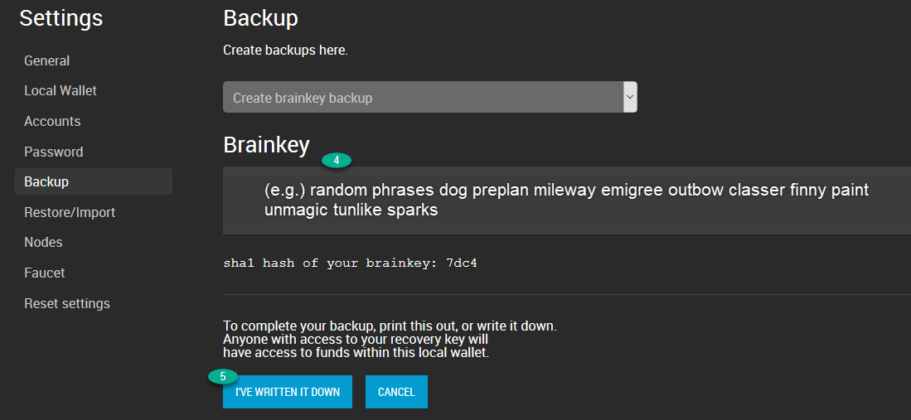
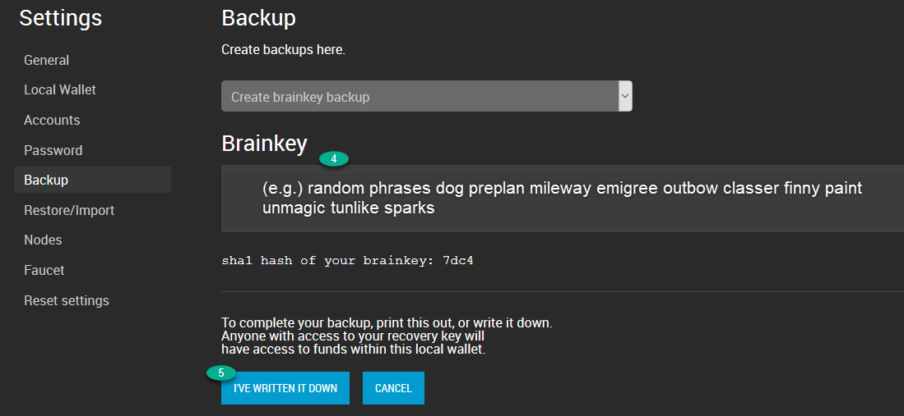

4. Backups and Restore your Wallet¶
Table of Contents
> If you use a Cloud Wallet, you do not need to create a backup. You do not have the option also.
4.1. Create Local Wallet Backup¶
It is recommended to make regular backups of your Local wallet. Please note that in order to recover from a backup you will also need to provide the passphrase (password) because backups are encrypted. If you lose your wallet backup file or your passphrase, you will not be able to access any of your funds again.
You are the only individual that has access to your account and funds, it is your responsibility to make a secure backup of your registered Local wallet account.
4.1.1. Backup Types¶
There are three types of backups.
| type | |
|---|---|
| Create local wallet backup | create a Binary File (.bin) |
| Create brainkey backup | give you long random phrases. You need to write down. |
| Create favorites backup |
4.1.2. How to Create a backup (.bin) file¶
- Open a Side menu and select [Settings]
- In [Settings], select [Backup].
- Make sure the backup type is Create local wallet backup
- Click [CREATE BACKUP NOW]
- Check your backup file name (e.g. bts_somrthing_20180420.bin)
- Click [DOWNLOAD]
Store this backup in at least two secure locations only accessible by you
{kind=link}

4.1.3. About the Brain Key¶
The brain key is used as source for all cryptographic keys generated in the wallet. If you have it secured, you will be able to regain access to your accounts and funds (unless the access keys have been changed)
4.1.4. How to Create a Brainkey backup (Advanced User Only)¶
- Open a Side menu and select [Settings]
- In [Settings], select [Backup].
- (#1) Make sure the backup type is Create brainkey backup
- (#2) Type in a password
- (#3) Click [SHOW BRAINKEY]
- (#4) Write down Brainkey (i.g. very random long phrases)
- (#5) Click [I’VE WRITTEN IT DOWN]
Write it down!! Anyone with access to your recovery key will have access to funds with in the local wallet.
 

{kind=link}
4.2. Restore / Import¶
We assume you have created a backup file (.bin) and use a Local wallet.
4.2.1. Restore / Import Options¶
| option | |
|---|---|
| Restore from a backup file (.bin) | restore from a backup file and a password |
| Import a private key | import Private keys to a Local wallet. The imported keys will be saved in the bin file. If this happens, you cannot rely on the brainkey for backup after that. |
| Import a BTS 0.9.3c key export file (.json) | |
| Restore using a local wallet brainkey | use a password and a Brain key |
| Restore favorites using a json file |
4.2.2. How to Restore from a backup (.bin) file¶
- Open a Side menu and select [Settings]
- In [Settings], select [Restore/Import].
- (#1) Make sure you selected Restore from a backup file (.bin)
- (#2) Click [Browse…] to find a backup file.


- (#3) Type in a password
- (#4) Click [SUBMIT]

- (#5) Type in New Local Wallet Name if you want to change the backup file name.
- (#6) Click [ACCEPT]
- (#7) Ready to Restore - below “RESTORE(….. WALLET)” is a button. Click it.
- You will find “Successfully restored (….)wallet. Done!!
- (#8) Click [DASHBOARD]


4.2.3. How to Check Active Local Wallet backup file name¶
- [Settings] - [Local Wallet] - Active Local Wallet

4.2.4. How to Recover Account with Brain key¶
- Open a Side menu and select [Settings]
- In [Settings], select [Restore/Import].
- (#1) Make sure you selected Restore using a local wallet brainkey
- (#2) Type in a password
- (#3) Type in a password (Confirm)

- (#4) Type in new Local Wallet Name if needed. (e.g. “default-test-brainkey-restore”)


- (#5) Type in BRAINKEY
- (#6) Click [CREATE NEW LOCAL WALLET]

- (#7) Click [DONE]
- (#8) Let’s check ACTIVE LOCAL WALLET name (Go to [Settings] - [Local Wallet])